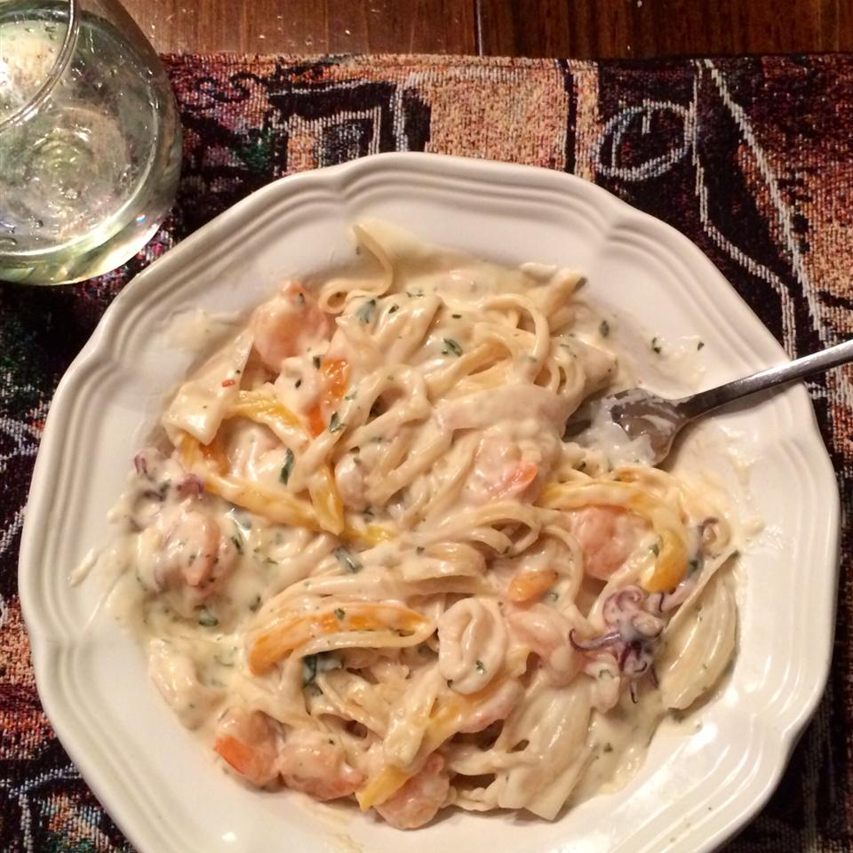

Calamari in a Creamy White Sauce

This dish looks like you slaved over it and has such a rich taste that you don't need any sides.
It is a creamy spicy calamari in white wine sauce over pasta.
Dinner for two but easily doubled. Serve with the rest of the wine!
What Does Calamari Taste Like? Calamari meat is firm and sometimes chewy (it should never be rubbery, however). The taste itself is mild and slightly sweet.
Calamari's flavor is somewhat hard to pin down, as the tender meat readily absorbs spices it's marinated in.
Ingredients
- ½ pound linguine pasta
- 2 tablespoons olive oil
- 3 cloves garlic, crushed
- 8 ounces squid, cleaned and cut into rings and tentacles
- ¾ cup white wine
- 3 cherry peppers, thinly sliced
- 2 tablespoons cornstarch
- 1 cup cream
- crushed red pepper flakes to taste
- salt and pepper to taste
- ½ cup shredded fresh basil
- ¼ cup freshly grated Parmesan cheese
Directions
- Bring a large pot of lightly salted water to a boil.
Add pasta and cook for 8 to 10 minutes or until al dente; drain.
- Heat olive oil in a large skillet over medium-high heat. Add crushed garlic,
and cook for a few seconds until it turns golden brown. Stir in the squid, and cook until it turns white. Pour in white wine and cherry pepper slices; bring to a simmer,
and cook until the wine is reduced by half, about 3 minutes.
- Stir cornstarch into the cream, and add to the simmering calamari.
Season with red pepper flakes, basil, salt, and pepper; stir until thickened.
To serve, toss pasta with sauce, and sprinkle with Parmesan cheese.